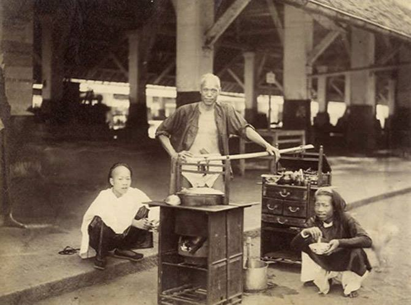
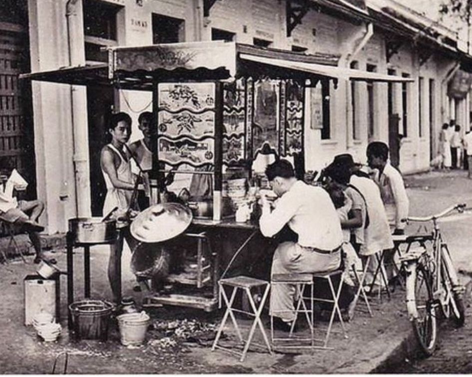
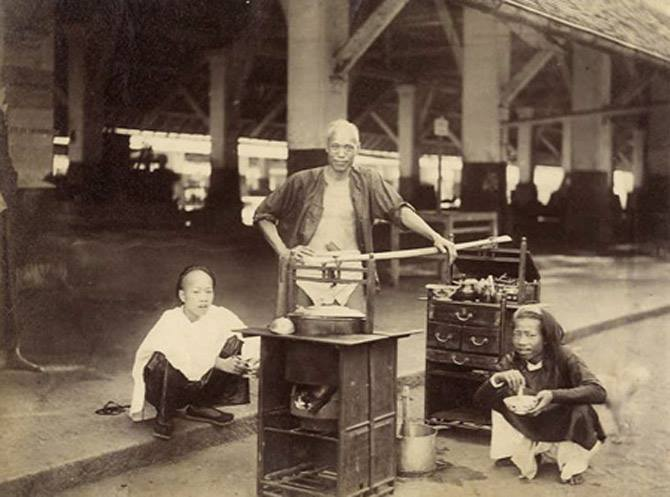
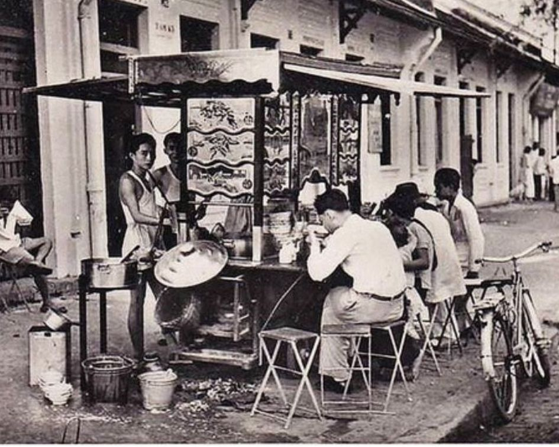

フォーはベトナムを代表する国民的料理です. ベトナム人にとってソウルフードであり、
一日3食フォーで済ませる人もいるほど生活に密着している料理です. 路上の屋台からレストラン、
ホテルの朝食などベトナムのあらゆるところでフォーは食べられています。
原材料は米粉と水で、日本ではうどんに似ていることからベトナムうどんとも呼ばれています。
日本のうどんの中でも特に名古屋のきしめんに似ています。1年で米が3回も収穫されているベトナム。
特に首都のハノイ北部では稲作が盛んにおこなわれています. そんな米粉を使った料理といえばフォーです。
フォーはベトナムを代表する国民的料理で、ベトナム人にとってのソウルフードです。
一日3食フォーで済ませる人もいるほど生活に密着している料理で、路上の屋台からレストラン、
ホテルの朝食などベトナムのあらゆるところでフォーは食べられています。
屋台やレストランでどこでもフォーを食べられるほど愛されている食べ物です。
ただ、ベトナムの一般家庭で作られることは少なく、基本的にはフォーは外食の食べ物なのです。
フォーは米麺といって水に漬けた米粉をペースト状にして金属板の上で熱したものを麺に形状にします。
米粉と水を練りこみ、平らな麺が特徴で、麺の細さは日本のうどんを少し細くしたほどです。
原材料は米粉と水で、日本ではうどんに似ていることからベトナムうどんとも呼ばれています。
ベトナム・ハノイで絶大な人気を誇るフォーの名店が
このたび日本に初上陸。現地の人も行列をつくる人
気ぶり、メニューは1種類だけという職人魂。
牛や豚骨をじっくり煮込んだ自慢の極上スープ。
ヘルシーな米麺とほやほやの牛肉、
味の決め手はシャキシャキのネギ、
もうお箸を持つ手が止まりません。
途中から秘伝のチリソースやライムを入れて
味の変化を楽しむのも本場ならでは。
最後の一滴まで飲み干せるやさしい旨味で
お腹もココロも満たされていくことでしょう。
あなたのフォーの常識が、きっとくつがえされるはず


鶏のフォー 600円

牛肉のフォー 840円 (大盛り940円)
本場の味そのままの絶品フォー
※パクチーｄ選べます

パクチー 150円

たまご 60円

ライム 0円

トッピングソース
秘伝チリソース0円
にんにく酢 0円

ビール：500円

SAPPORO 220円
GRANDKIRIN 200円
ASAHI 190円
軽井沢ビール 150円

飲み物 200円
 



古代文献を一目見ただけでは、王様がビーフヌードルスープを 食べているという説明やビーフヌードルスープの説明はありません。 フォーは、フランス植民地時代の詩にのみ登場しました。トゥモー、 サッチラム、ヴバン、グエントゥアン、グエンコンホアン...ボー、 フォーはベトナムの民間伝承にはほとんどありませんでした。 これは、20世紀以前に牛とフォーがベトナム人にとって奇妙で あったことを証明し、乳製品はヨーロッパ人には馴染みがあり、 当時のベトナム人には馴染みのないものでした。新鮮な牛乳、 バター、チーズ、ヨーグルト。 。牛の繁殖は、フランスで盛んな産業です。 フランスは、主に牛乳で作られた100種類以上のチーズが有名です。 フランスがインドシナを占領したとき、牛乳、バターチーズ、 牛肉の需要が不可欠でした。ミルクコーヒー、牛乳を飲むことはフランスの習慣です。 ベトナム人はお茶だけを飲みます。動物のミルクを飲むアジア人の一般的な概念は、 動物のミルクに変えることです。フランスと働く中流階級のみが「シャンパンの夕べ、 牛の朝の牛乳」の味を知っています。1940年の「牛乳の地理」で アンナムの牛乳は、多くの裕福なクラスにのみ対応しています 。牛と牛製品はインドシナに馴染みがありません。ここの子供たちは3、 5歳まで母乳で育てています。東南アジアの人々は牛乳とバターを使用していません。 「デイリーピープル」は新しいイディオムであり、裕福な子供たちのみを対象としています。 ベトナムは水牛のみを飼育しています。健康な水牛は畑を耕すのに役立ちます。 水牛が死んだとき、または年老いた病人が肉を食べることができるときだけ 過去には、水牛料理しかありませんでした。 20世紀以前には、 牛肉に関連するベトナム料理は言及されていませんでしたが、 これは牛がベトナムにほとんど存在しないことを証明しています。 1651年のAlexandre de Rhodesの辞書には、phoという単語はありません。 トンキンの人々に関するエッセイ、インドシナマガジン（1907年9月15日）で、 ジョルジュドゥムティエはフォーの名前を付けずにトンキンの人気料理について語りました。 インドシナでの牛の輸入と飼育の調査は、Phoが20世紀初頭にしか現れなかったことを証明しています。 Phoはすぐに好まれたため、フランスの植民地詩に登場し、10年余り後にPhoは辞書。 1937年に発行されたGustave Hue（Dictionnaire Annamite-Chinois-Français）の辞書では、 「Pho cong：pot-au-feu」と定義されています。 フランス語はPHOをpot au feu（po-pho）として翻訳しています。 Pot au feu-ビーフシチュースープは、 伝統的なフランス料理です。フォーは、フランスの食文化と交流するベトナム人の創造物です。食材の点では、 伝統的なフランスのスープは、野菜を除いてフォーを調理するために使用される鍋にほとんど似ています。 牛肉には硬くて歯ごたえのあるものがたくさんあります。尾、腱、rib骨、テンダーロイン、お腹、 そして銀色の音楽です。タマネギとシナモン、スターアニス、コショウで煮込んだ。 野菜、塊茎（ニンジン、セロリ、ジャガイモ）の腱が柔らかくなると、ブロスはろ過されて透明になります。 ポーはアロマのためにタマネギのグリルを使用し、皮をむいて水に入れます。タマネギはフランスが ベトナムに入ったときにのみ利用できるため、タマネギと呼ばれます。アニス（スターアニス）も、 ベトナム人にとって馴染みのある味ではありません。 フランス人はインドシナに住んでおり、故郷や民族料理に懐かしさを感じています。 彼らはこの料理を作るためにベトナム人シェフにそれを見せました。ベトナムの人々は、 魅力的で食べやすい料理を見つけるために、生grillのグリル、シナモンなどのベトナム風味を追加し、 ジャガイモをスライスしたばかりのパンに置き換えることで、創造的にフレンチビーフスープをベトナム化しました。 Banh chung、春巻きはベトナム人の長年のケーキです。スープはポトフのように調理されますが、野菜用ではありません。 ベトナム人はフランス人のようにフォークとナイフを使用しませんが、箸を使用するため、 肉はベトナムの習慣に従って刻まれます。さらに、当時のベトナム社会は貧しく、 そのような大きな肉片は贅沢品でした。父と友人は、肉と一緒にワインをすすりながら座って、 妻と子供たちが台所で食べて食べたいという希望を見つけるのを待っていました。 薄く調理した肉をスライスすることは、マスターのスキルです。調理された肉、 薄くスライスされたリブ、日光を示すが、引き裂かれていない、リブ付き、冷たい、 麺を注ぐとき、スープが肉に浸透し、新しい肉を食べると大胆に感じる勢い。 煮込んだ肉はつぶされません。腱は柔らかくなければなりません。 PhoはTonkinの料理でした（後にフランス語の辞書によると、 スープtonkinoise-Tonkinスープと訳されています）。これにより、 Phoが北に表示されることが確認されます。
2015年、出張で訪れたハノイのフォ-ではじめてその味に出会い、
衝撃を受ける。アジアンフードが好きなわけでもなく、
パクチーはむしろ嫌いだったはずのすみけんが、
「これは美味い！明日も食べたい！」と思ったのがすべての始まり。
その後、出張でハノイに行く度にフォーを訪れ
どんどんその味に魅了される。「いつかこの味が日本でも食べられたらな・・」と、
日本出店への想いが芽生え始める。


| 名前 | Phở 博多 |
|---|---|
| 住所 | 〒812-0012 福岡県福岡市博多区博多駅中央街１−１ |
| TEL | 03-4565-1113 |
| phohakata＠gmail.com | |
| 営業時間 | 11:00～22:00 |